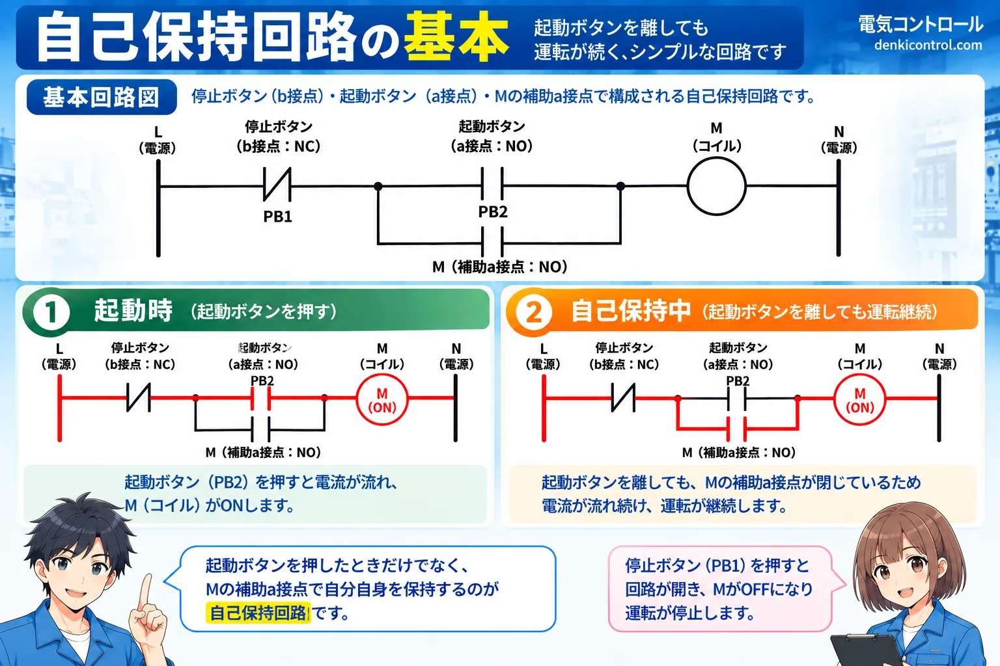
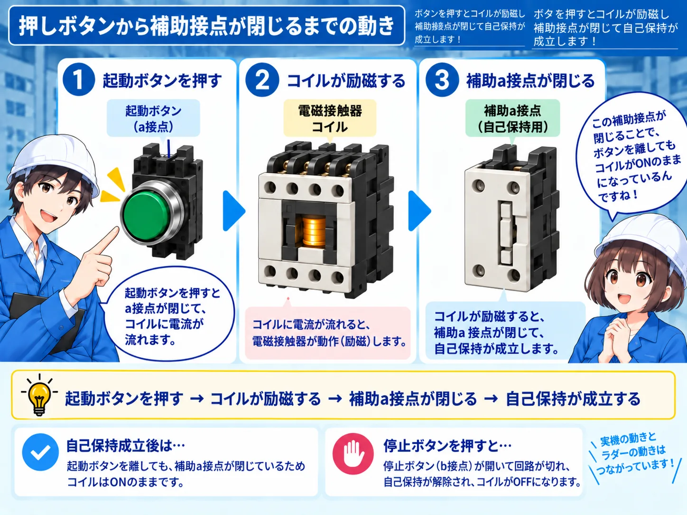
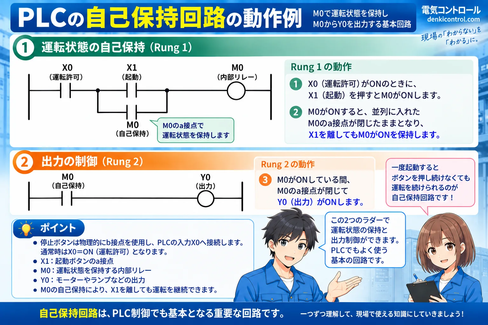
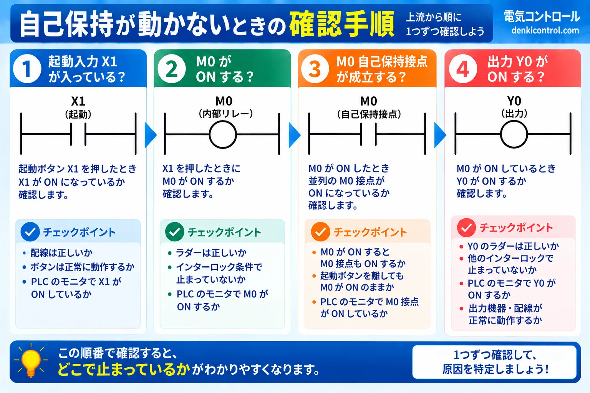

この記事が向いている人
- 自己保持回路を基礎から理解したい人
- 起動ボタンを離しても運転が続く理由を整理したい人
- リレー回路とPLCラダーのつながりを知りたい人
最終内容更新：
公式資料確認日：
自己保持回路は、電磁開閉器（マグネットスイッチ）や継電器（リレー）が、自分自身の接点を利用して動作状態を保持する回路です。
Panasonicの公式用語解説でも、自己保持回路は電磁開閉器やリレーが自己の接点を利用して動作状態を保持する回路として説明されています。起動のきっかけになる信号がなくなったあとも、自己保持用の接点を通して回路をつなぎ続けることで、運転状態を維持できます。
モーター運転、ポンプ運転、警報保持など、「一度起動したあと、停止操作をするまで状態を続けたい」ときに基本となる考え方です。
まずは回路全体を一度に覚えようとせず、起動時は起動a接点を通り、起動ボタンを離した後は自己保持a接点側へ通電経路が切り替わる、という2つの状態を見ると理解しやすくなります。

起動ボタンを押してコイルがONすると、連動する自己保持a接点が閉じます。起動ボタンを離した後は、その自己保持接点側の経路でコイルへの通電を続けます。停止時の動きは後の回路説明で順番に確認します。
自己保持回路を理解する時は、起動ボタン・コイル（出力）・自己保持接点を分けて考えると分かりやすくなります。
最初に回路を成立させるきっかけです。一般的な基本回路ではa接点を使います。
起動条件が成立するとONになり、接触器やリレー、PLC出力などの動作状態を作ります。
コイルや運転出力に連動してONし、起動ボタンを離した後も回路を成立させます。
基本回路ではb接点を使い、操作すると回路を開いて自己保持を解除します。

基本的な自己保持回路では、停止用のb接点を直列に置き、その後ろで起動用a接点と自己保持用a接点を並列にします。その先にリレーや電磁接触器のコイルを接続します。
起動ボタンを押すとコイルが励磁され、コイルに連動した補助a接点が閉じます。起動ボタンを離しても補助a接点側の経路が残るため、コイルへの通電が続きます。
停止ボタンを押してb接点が開くと、起動側と自己保持側のどちらの経路も同時に切れます。コイルがOFFすると自己保持接点も元に戻り、停止状態になります。
自己保持用接点は、起動ボタンとは別の接点です。リレーや電磁接触器のコイルが励磁されることで、対応する補助接点が切り替わります。
PLCでは、運転状態を内部リレーMで自己保持し、そのMの接点を使って実出力Yを駆動する形で整理すると、実務でも拡張しやすくなります。
ここでは、操作盤の停止押しボタンを物理的なb接点でPLC入力X0へ配線し、通常時はX0がON、停止ボタンを押した時にX0がOFFになる前提で説明します。PLCラダーでは、そのX0のON状態を運転許可条件として使います。
下の例は特定メーカーの画面や命令表現を再現するものではなく、自己保持の考え方を理解するための一般的な概念例です。
物理の停止押しボタンはb接点ですが、通常時にX0がONになる配線なら、ラダーではX0がONであることを運転許可条件として扱います。押しボタンの接点種別と、PLC内部で見る入力状態は分けて考えます。
起動ボタンを押してX1がONすると、X0の運転許可条件が成立している間にM0がONします。M0がONすると、X1と並列に置いたM0の自己保持接点が成立するため、起動ボタンを離してX1がOFFになってもM0はONを維持します。
別RungではM0の接点を条件にY0を出力します。停止ボタンを押すと物理b接点が開いてPLC入力X0がOFFになり、Rung 1が不成立となるためM0がOFFし、自己保持が解除されます。その結果、Rung 2のM0接点も不成立になり、Y0もOFFします。

M0などの内部リレーに運転状態を持たせ、Y0はその状態から出力する形にすると、インターロックや異常停止条件などを整理しやすくなります。非常停止などの安全機能は、通常のPLCラダーとは分けて安全回路として設計します。
停止b接点が閉じており、起動できる状態になっています。
起動a接点が閉じ、コイルまたは運転出力がONします。
出力に連動したa接点が閉じ、起動ボタンと並列の保持経路が成立します。
起動a接点は元に戻りますが、自己保持接点側から通電が続くため運転は継続します。
停止b接点が開き、保持経路への通電が切れます。
コイルがOFFし、自己保持接点も元に戻ります。再び起動ボタンを押すまで停止状態です。
「起動」と「停止」は操作の役割、「自己保持」は起動後の状態を継続する回路の仕組みとして分けて考えます。
そのため、実際には起動・停止用の押ボタンと自己保持回路を組み合わせて使う形が基本になります。
| 要素 | 基本的な役割 | 自己保持回路での見方 |
|---|---|---|
| 起動a接点 | 運転開始のきっかけを作る | 最初にコイル・出力をONする |
| 自己保持a接点 | ONした状態を継続する | 起動接点と並列に入り、起動ボタンを離した後の経路になる |
| 停止b接点 | 通電経路を開く | 起動側と保持側の両方を切って出力をOFFする |
「起動ボタンを押している間は動くが、離すと止まる」という場合も、最初から保持接点だけを疑うのではなく、信号の流れを上流から順番に確認すると原因を切り分けやすくなります。
起動ボタンを押した時にPLC入力X1がONしているか確認します。入らない場合は、押しボタン、配線、入力側の状態を先に確認します。
X1がONした時にM0がONするか確認します。ONしない場合は、運転許可やインターロックなど、M0より前の条件を確認します。
M0がONした後、X1と並列に置いたM0のa接点が成立し、X1を離してもM0がONを維持できるか確認します。
M0がONしているのにY0がONしない場合は、Y0側のラダー条件を確認します。PLC上でY0がONしている場合は、出力配線や接続機器側も切り分けます。

起動ボタンは最初のきっかけです。起動後の継続を担当するのは、リレー・電磁接触器の補助接点やPLCラダー上の自己保持接点です。
一般的な基本回路では起動側にa接点、停止側にb接点を使います。図を見る時は「通常状態で開いているか・閉じているか」を意識すると理解しやすくなります。
どちらもON状態を保持できますが、仕組みと解除条件の管理方法が異なります。この記事の自己保持例では、X0の運転許可条件のもとでX1を起動入力とし、M0のa接点をX1と並列に置いてM0を保持します。一方、SET/RESETでは命令によってビットのON/OFF状態を保持・解除します。
SET/RESETの命令名称・記号・動作仕様はPLCメーカーや機種によって異なります。使用するPLCのマニュアルを確認し、解除条件や異常時の動作、運転許可・インターロックなどを含めて設備仕様に合わせて設計してください。
通常の自己保持回路は、運転状態を継続するための制御回路です。非常停止などの安全機能を、通常の自己保持回路だけで代用するものではありません。
OMRONの公式解説では、非常停止機器にはISO 13850に基づく要求事項として、直接開路動作機構や、操作後に手動復帰するまで保持される機械的保持機能などが示されています。IDECの公式解説でも、非常停止用押ボタンスイッチはNC接点を開いて電流を遮断し、ラッチング機構によって遮断状態を維持する構造が説明されています。
ここでいう非常停止スイッチの「保持」は、通常運転を継続する自己保持回路とは目的が異なります。安全に関わる設計では、対象機械のリスクアセスメント、適用規格、使用する安全機器の仕様を確認してください。
非常停止、安全扉、セーフティリレーなどを扱う場合は、通常制御のラダー例だけで安全性を判断せず、メーカーの安全機器資料や適用規格を確認する必要があります。
この記事は、自己保持回路の定義と安全上の切り分けを確認するため、以下のメーカー公式情報を参照して内容を整理しています。
公式資料確認日：2026年9月30日
本記事の回路図・ラダー図は、特定メーカーの製品画面や回路図を再現するものではなく、基本原理を理解するための概念図として作成します。
今後の記事づくりの参考にします。どちらかを選ぶだけで回答できます。
回答は匿名で集計し、個人情報の入力はありません。
自己保持回路を理解したら、a接点・b接点、起動・停止回路、インターロック、正転・逆転回路へ進むと、制御回路のつながりを整理しやすくなります。